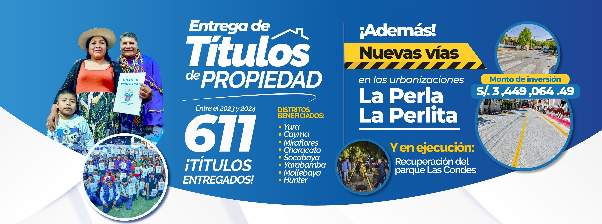
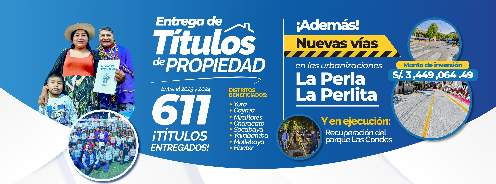

Conoce Arequipa
AREQUIPA es una ciudad y un área metropolitana, capital de la provincia homónima y del departamento de Arequipa, es considerada la «Capital Jurídica del Perú» y la «Sede Oficial del Tribunal Constitucional» desde 1979.
Actualmente, según el Censo 2017 realizado por el instituto Nacional de Estadística e Informática (INEI) Arequipa tendría 1 millón 382 mil 730 habitantes; de los cuales, el 24,0% son menores de 15 años , 64,3% tiene de 15 a 59 años y el 11,7% son adultos mayores (60 a mas años de edad) está conformada por 29 distritos. El área metropolitana de Arequipa se extiende sobre una superficie de 2900 km2. Es considerada un importante Centro Industrial y Comercial del Perú, dentro de su actividad industrial, destaca la producción textil de lana de camélidos con calidad de exportación.
La ciudad fue fundada el 15 de agosto de 1540, bajo la denominación de «Villa Hermosa de Nuestra Señora de la Asunta» en nombre del marqués don Francisco Pizarro y el 22 de setiembre de 1541 el monarca Carlos V en Cédula Real ordena que se le llamé «Ciudad de Arequipa». En el periodo virreinal adquirió desde ya importancia, misma que fue reconocida por la Corona Española a través de los títulos que se le conceden tales como «Muy Noble y Muy Leal» y el de «Fidelísima». En la historia republicana del Perú el protagonismo de la ciudad de Arequipa fue gravitante, pues llegó a ser declarada "Capital de la República" durante el gobierno de Lizardo Montero. Su casco histórico se extiende sobre un superficie de 332 hectareas y fue declarado por la Unesco como «Patrimonio Cultural de la Humanidad», por sus diversos espacios escénicos y culturales es una Ciudad Receptora de Turismo Nacional e Internacional.
MISIÓN INSTITUCIONAL
Promover la adecuada prestación de servicios públicos y el desarrollo sostenible y armónico para la ciudadania arequipeña con calidad, transparencia y ética.
VISIÓN INSTITUCIONAL
Arequipa, Patrimonio Cultural de la Humanidad, consolidada como nodo estratégico de desarrollo de la zona centro occidental de Sudamérica.